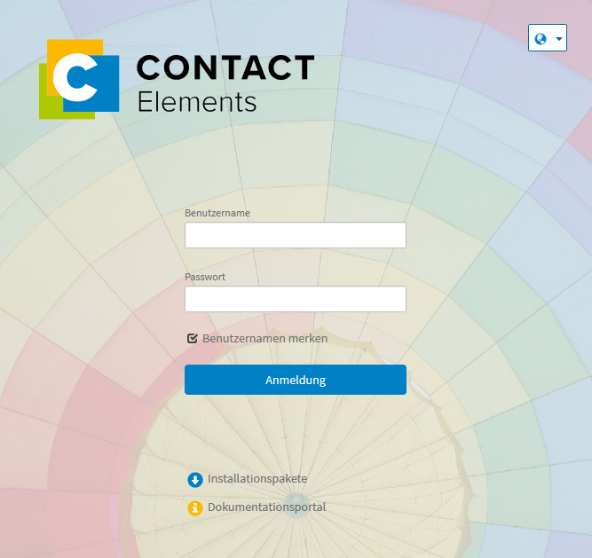

Anmeldung¶
Die Anmeldung im Web UI erfolgt über eine Internetadresse (URL), die von Ihrem Administrator bereitgestellt wird. Voraussetzung für die Anmeldung ist ein gültiges Benutzerkonto, welches aus Benutzernamen und Passwort besteht. Falls Sie noch kein Benutzerkonto haben, wenden Sie sich bitte an Ihren Administrator. Im Web UI besteht keine Möglichkeit sich als Gast bzw. anonymer User anzumelden. Dieses Kapitel beschreibt die Systemanmeldung in einer Schritt-für-Schritt-Anleitung.
Bemerkung
Über das Globus-Symbol im rechten oberen Bereich des Anmeldedialogs können Sie Ihre Systemsprache einstellen. Im unteren Bereich des Anmeldedialogs haben Sie die Möglichkeit Installationspakete herunterzuladen oder das Dokumentationsportal zu öffnen.
- Öffnen Sie die URL vom Web UI in Ihrem Internetbrowser.
Der Anmeldedialog öffnet sich (siehe Screenshot).

Geben Sie in die Eingabefelder Ihren Benutzernamen und Ihr Passwort ein.
Klicken Sie die Checkbox vor Benutzernamen merken an, wenn Sie diesen für zukünftige Logins speichern möchten.
- Klicken Sie auf Anmeldung, um sich im System anzumelden.
Die Homepage öffnet sich.
Bei einer Single Sign-On (SSO) Authentifizierung überspringen Sie den Anmeldedialog. Beim Öffnen der URL gelangen Sie ohne vorheriger Eingabe Ihrer Benutzerdaten direkt auf die Homepage. Mit gedrückter Shift-Taste während des Programmstarts können Sie eine konfigurierte automatische Anmeldung verhindern.